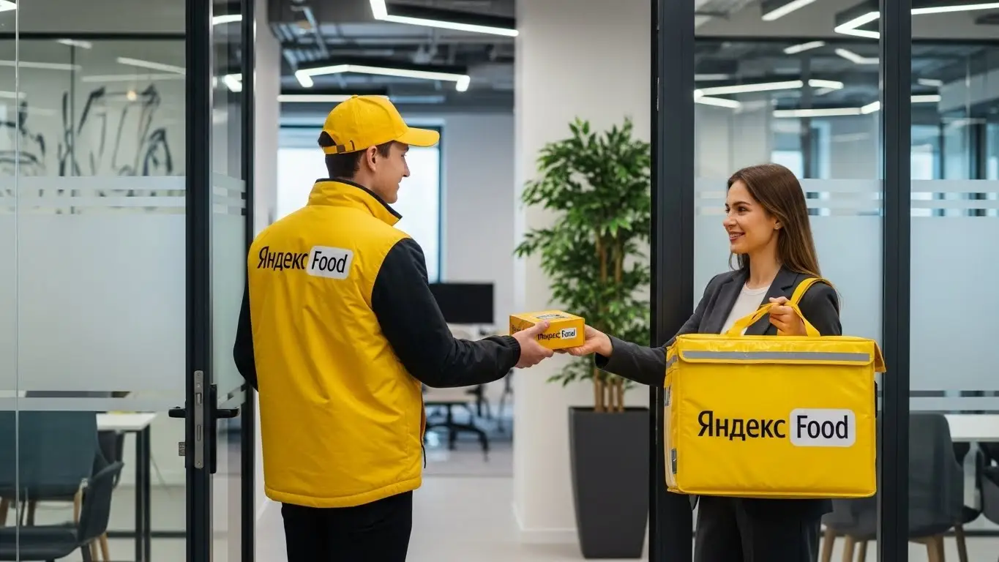
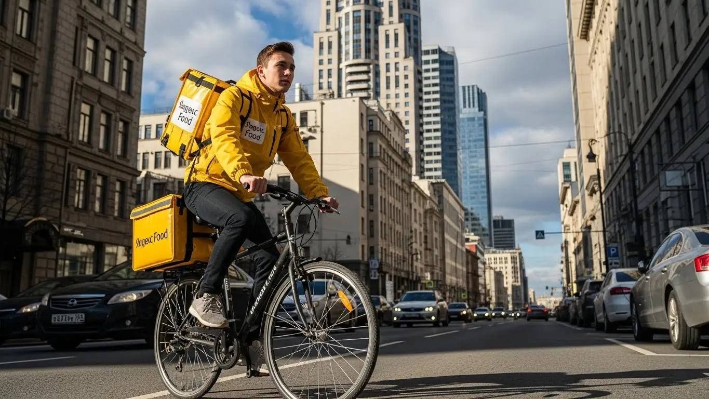

Работа курьером Яндекс Еды в Саратове 2025-2026: доход, график

- Работа курьером Яндекс Еды в Саратове: для кого эта вакансия и что вы получите
- Сколько вы будете зарабатывать курьером в Саратове: калькулятор дохода и разбор выплат
- Реальный заработок курьера в Саратове: смены и месячный доход
- График работы и форматы занятости
- Требования к кандидату и документы
- Самозанятость, налоги и юридическая чистота
- Пошаговое оформление и первый выход на линию в Саратове
- Пешком, на вело или на авто: что выгоднее в Саратове
- Районы, маршруты и «топовые» зоны заказов в Саратове
- Безопасность, страховка, штрафы и оплата простоя
- Плюсы и возможные минусы работы курьером в Саратове
- Реальные истории и отзывы курьеров из Саратове
- Короткие ответы на главные вопросы
- Итоги и ваш следующий шаг
Все города
Думаешь о работе курьером Яндекс Еды в Саратове? Отличная идея, но сразу скажу: это не так просто, как кажется в рекламных объявлениях. Многие новички приходят с горящими глазами, а потом сталкиваются с реальностью: низкий доход, непонятные штрафы, убитая подвеска на саратовских дорогах или стертые ноги после забегов по бесконечным подъемам Волжского района. Да и пробки на Чернышевского в час пик или у ТЦ «Триумф Молл» могут съесть весь твой заработок. Эта статья — не про общие слова, а про то, как реально выживать и зарабатывать курьером Яндекс Еды именно здесь, в нашем Саратове.
Поверь моему опыту, без понимания «внутрянки» курьерской работы в Саратове ты рискуешь разочароваться уже в первый месяц. Одно дело — кататься по ровным улицам, другое — пробиваться через Заводской район с его длинными проспектами или штурмовать подъемы в Октябрьском. Здесь каждый километр, каждая минута простоя в пробке на Астраханской или у моста через Волгу, каждый литр бензина или заряд батареи велосипеда напрямую влияют на твой чистый доход. Большинство новичков в Саратове совершают одни и те же ошибки, теряя деньги и время просто потому, что не знают местной специфики: где «рыбные» места, когда лучше выходить на смену и как не попасть на штраф за опоздание из-за непредсказуемого трафика. Если ты живешь в Саратове и хочешь узнать подробнее про условия, часто задаваемые вопросы, калькулятор и форму заявки, переходи на работу курьером Яндекс Еда в Саратове.
Здесь я не буду лить воду. Мы разберём, какой формат работы курьером Яндекс Еды в Саратове выгоднее именно для тебя: пеший, вело или на авто. Выясним, сколько реально можно заработать в час и в месяц, учитывая наши саратовские реалии. Я покажу на примерах, где находятся самые «рыбные» места и часы пик, как погода — будь то жаркое лето или снежная зима — влияет на заказы и твой доход. Расскажу, как избежать типичных штрафов и блокировок, сравним Яндекс Еду с другими сервисами доставки в Саратове и, конечно, поделюсь реальными отзывами местных курьеров, чтобы ты видел полную картину.
Я сам, Алексей, не первый год в этой теме, начинал курьером, а сейчас у меня свой небольшой таксопарк-партнёр. Так что, поверь, я знаю эту кухню изнутри, особенно в Саратове, где каждый район имеет свои особенности, а каждый сезон — свои сюрпризы. Давай по порядку, сейчас всё разложу по полочкам, чтобы ты смог принять взвешенное решение и начать зарабатывать, а не терять время и нервы. Начнём с главного: как вообще устроиться и что тебя ждёт.
Прежде чем углубиться в детали, предлагаю короткий ликбез по ключевым моментам статьи.
Экспресс-навигация: что ты узнаешь о работе курьером в Саратове
В этой статье ты ТОЧНО узнаешь:
- Как рассчитать реальный доход за смену и месяц в Саратове с учётом расходов на транспорт?
- Где в Саратове искать самые «рыбные» районы и как выбирать слоты, чтобы не простаивать?
- Какой формат доставки (пеший, вело, авто) будет самым выгодным для тебя в Саратове, исходя из районов и погоды?
- За что могут применить штрафы, как работает оплата простоя и что делать, если заказов мало?
- Нужно ли оформлять самозанятость, как это сделать за 10 минут и сколько платить налогов?
- Можно ли начать работать без опыта, какие документы нужны и берут ли с 16-17 лет?
А если тебе некогда читать всю статью — переходи сразу к заключению, где ты найдёшь короткие ответы на все эти вопросы и указания, в каких разделах искать подробности.
А теперь взгляни на общую картину в цифрах.
Работа курьером Яндекс Еды в Саратове: ключевые цифры

Работа курьером Яндекс Еды в Саратове: для кого эта вакансия и что вы получите
Если ты ищешь стабильный заработок в Саратове, курьерская работа в Яндекс Еде может стать отличным решением. Это не просто подработка, а полноценная возможность получать доход с гибким графиком, который легко подстраивается под твои планы. Условия просты: здесь нет строгих требований к опыту, что делает вакансию доступной для широкого круга людей.
В этом блоке я расскажу, кому именно подойдет эта работа в нашем городе, какие преимущества ты получишь, работая рядом с домом, и на какой доход можно рассчитывать. Моя цель — дать тебе честное представление о том, что такое быть курьером Яндекс Еды в Саратове, чтобы ты мог принять взвешенное решение о начале работы.
Кому подойдёт эта работа в Саратове
Курьерская работа в Яндекс Еде в Саратове — это универсальная вакансия, которая подходит практически каждому, кто ищет гибкий график и быстрые выплаты. Во-первых, это идеальный вариант для студентов СГУ или СГТУ, которым нужна подработка после пар или на выходных. Ты можешь сам выбирать, когда выходить на линию через приложение Яндекс Про, чтобы совмещать учёбу и заработок.
Во-вторых, эта работа отлично подходит людям без опыта. Здесь не требуется специальное образование или длительное обучение; главное — желание работать и ответственный подход. Многие приходят в Яндекс Еду, чтобы быстро освоиться и начать получать доход, а потом остаются надолго из-за удобных условий. Наконец, если тебе важен свободный график и ежедневные выплаты, чтобы всегда иметь деньги на карте, то это твой вариант. Стать курьером Яндекс Еды — значит быть самому себе начальником, и это дорогого стоит.
Главные преимущества для жителей районов Заводской, Ленинский, Кировский
Одно из ключевых преимуществ работы курьером Яндекс Еды в Саратове — это возможность работать рядом с домом. Тебе не придется тратить часы на дорогу через весь город, чтобы добраться до «рыбных» мест. Например, если ты живешь в Заводском районе, то можешь брать заказы из местных кафе и магазинов, доставляя их по своему району. Это экономит время и деньги на проезд, а также позволяет выполнять больше доставок.
Аналогично, для жителей Ленинского района, особенно в активно развивающихся микрорайонах вроде Солнечного-2, всегда найдется достаточно заказов. Здесь много жилых комплексов, а значит, и спрос на доставку еды стабильно высокий. Курьеры из Кировского района, который включает в себя и часть центра, могут сосредоточиться на доставках по проспекту Столыпина или улице Московской, где сосредоточено множество ресторанов и офисов. Работа в своем районе позволяет лучше знать местность, что способствует более быстрому выполнению заказов и, соответственно, увеличению заработка.
Краткое обещание по доходу и условиям
Если говорить о доходе, то в Саратове курьер Яндекс Еды может рассчитывать на вполне достойные суммы. За смену, в зависимости от типа транспорта и количества часов, можно получить от 1500 до 3500 рублей. При полной занятости, работая 5-6 дней в неделю, твой месячный доход может достигать 60 000 – 80 000 рублей и даже выше, особенно если активно использовать повышающие коэффициенты.
Важно, что Яндекс Еда предлагает ежедневные выплаты, что очень удобно для планирования бюджета. Ты сам выбираешь график работы, будь то несколько часов в день или полная занятость. И, как я уже говорил, начать можно без опыта — все необходимые знания ты получишь на онлайн-обучении. Это честное и прозрачное предложение с отличными условиями для тех, кто готов работать и хочет получать заработок за свой труд без задержек, в том числе как самозанятый.
Кейс из практики: Мой знакомый, Олег, студент из Ленинского района, работает пешим курьером по 4-5 часов в день после пар. Он выбирает слоты в районе СХИ и 3-й Дачной, где много общежитий и жилых домов. За вечернюю смену в будни он стабильно зарабатывает 1500-2000 рублей, а в выходные, когда спрос выше, его доход доходит до 2500-3000 рублей. За месяц у него выходит около 35 000 – 40 000 рублей, что для студента — отличная подработка.
Вывод по разделу: Работа курьером Яндекс Еды в Саратове — это отличная возможность для тех, кто ищет гибкий график, быстрые выплаты и не имеет опыта. Она идеально подходит студентам и тем, кому нужна подработка рядом с домом. Чтобы максимизировать доход, выбирай слоты в своем районе и старайся работать в часы пик. Это позволит тебе получать максимальный заработок.

Сколько вы будете зарабатывать курьером в Саратове: калькулятор дохода и разбор выплат
Вопрос заработка всегда стоит на первом месте, и это правильно. Сколько реально зарабатывает курьер Яндекс? В Яндекс Еде система оплаты прозрачна, но состоит из нескольких компонентов, которые важно понимать. Чтобы ты мог реально оценить свой потенциальный доход, нужно разобраться, из чего он складывается и как пользоваться инструментами для его расчёта.
Я расскажу тебе о всех составляющих заработка курьера, объясню, как работает калькулятор дохода, и приведу конкретные примеры для разных типов курьеров в Саратове. Это поможет тебе не только понять, сколько можно заработать, но и как влиять на эту сумму, используя приложение Яндекс Про, чтобы получать максимум.
Из чего складывается доход курьера
Доход курьера Яндекс Еды в Саратове формируется из нескольких ключевых составляющих. Во-первых, это оплата за каждый выполненный заказ. Она зависит от сложности заказа, его веса и времени доставки. Во-вторых, ты получаешь доплату за расстояние — чем дальше нужно везти заказ, тем выше эта часть оплаты. Это особенно актуально для автокурьеров, которые часто выполняют дальние доставки, в том числе через сервис Яндекс Доставка, между районами.
Кроме того, существуют повышающие коэффициенты, или «коэффициенты спроса». Они активируются в часы пик, в плохую погоду (дождь, снегопад) или в районах с высоким спросом, например, около ТРЦ «Триумф Молл» или в центре города. Это отличная возможность увеличить свой заработок. Не забывай и про бонусы от сервиса за выполнение определенного количества заказов или за работу в определенные часы. И, конечно, чаевые от клиентов — это приятное дополнение, которое полностью остается у тебя. Важные преимущества, которые отличают Яндекс Еду, — это оплата простоя, когда ты находишься на смене, но заказов временно нет, и возможная компенсация проезда в некоторых случаях, что защищает твой доход и делает условия работы более выгодными.
Как пользоваться калькулятором дохода
Калькулятор дохода — это удобный инструмент, который помогает тебе прикинуть, сколько ты можешь заработать в Саратове. Пользоваться им довольно просто. Сначала тебе нужно выбрать тип доставки: пеший курьер, велокурьер или автокурьер. От этого зависит базовая ставка и скорость выполнения заказов, которые ты видишь в приложении Яндекс Про.
Далее ты указываешь планируемые часы работы в день и количество дней в неделю. Например, 4 часа в день, 5 дней в неделю, или 8 часов, 6 дней. Калькулятор учтет эти данные, а также средние показатели по Саратову, включая коэффициенты спроса в пиковые часы. На выходе ты увидишь примерный дневной и месячный доход, который можно получить при выбранных условиях работы. Это не гарантированная сумма, но очень точный ориентир, который поможет тебе спланировать свой график и понять, сколько реально можно заработать.
Рассчитай свой примерный доход курьера в Саратове
Чтобы узнать подробнее об условиях, часто задаваемых вопросах, калькуляторе и форме заявки, переходи на работу курьером Яндекс Еда в твоём городе.
Примеры расчёта для пешего, вело- и авто‑курьера в Саратове
Давай рассмотрим несколько наглядных сценариев для работы курьером Яндекс Еды в Саратове, чтобы ты лучше понимал потенциальный заработок.
Пеший курьер: Если ты работаешь пешим курьером в центре Саратова (Волжский или Кировский районы) по 6 часов в день, 5 дней в неделю, то можешь рассчитывать на 1800-2500 рублей за смену. В среднем это 40 000 – 55 000 рублей в месяц. Такой доход возможен, потому что в центре много ресторанов и коротких дистанций, что позволяет брать больше заказов.
Велокурьер: Велокурьер, работающий между спальными районами, например, от Ленинского до Октябрьского, по 8 часов в день, 6 дней в неделю, может зарабатывать 2500-3500 рублей за смену. Это около 60 000 – 85 000 рублей в месяц. Такой доход достигается благодаря тому, что велосипед дает преимущество в скорости на средних дистанциях и позволяет избегать пробок.
Водитель-курьер (автокурьер): Для водителя-курьера, который охватывает весь город и пригороды, такие как Энгельс, работая по 10 часов в день, 6 дней в неделю, доход может составлять 3500-5000 рублей за смену. В месяц это 85 000 – 120 000 рублей. Автомобиль позволяет брать самые дальние и дорогие заказы, особенно в плохую погоду, когда пешие и велокурьеры менее эффективны.
| Тип курьера | Примерный дневной доход (6-8 часов) | Примерный месячный доход (полная занятость) | Оптимальные зоны в Саратове |
|---|---|---|---|
| Пеший курьер | 1500 – 2500 ₽ | 40 000 – 55 000 ₽ | Центр (Волжский, Кировский районы), плотная застройка |
| Велокурьер | 2000 – 3500 ₽ | 50 000 – 85 000 ₽ | Спальные районы (Ленинский, Октябрьский), средние дистанции |
| Автокурьер | 3000 – 5000 ₽ | 70 000 – 120 000 ₽ | Весь город, пригороды (Энгельс), дальние заказы |
Кейс из практики: Мой бывший водитель такси, Сергей, перешел в автокурьеры Яндекс Еды в Саратове. Он работает по 8-10 часов, преимущественно в вечерние часы и выходные, когда спрос на доставку высокий, особенно в районе ТРЦ «Happy Молл» и по направлению в Энгельс. За смену он часто делает 4000-4500 рублей, а за месяц его доход стабильно держится на уровне 90 000 – 100 000 рублей. Он говорит, что главное — выбирать слоты с повышенным спросом через приложение Яндекс Про и не бояться дальних поездок.
Вывод по разделу: Твой заработок курьером в Саратове зависит от многих факторов: типа транспорта, количества часов, выбранных зон и умения ловить пиковые коэффициенты через приложение Яндекс Про. Используй калькулятор дохода как ориентир, но помни, что реальные цифры могут быть выше при грамотном подходе. Не игнорируй оплату простоя и чаевые — это важные составляющие твоего общего дохода.
Реальный заработок курьера в Саратове: смены и месячный доход
Поговорим о самом главном — о деньгах. Сколько реально зарабатывает курьер в Яндексе в Саратове? Это не фиксированная зарплата, а доход, который зависит от многих факторов: сколько ты работаешь, на чём доставляешь, в каких районах и даже какая погода за окном. Важно понимать, что условия работы в сервисе гибкие, и твой доход напрямую связан с твоей активностью. Я дам тебе конкретные цифры, чтобы было понятно, на что рассчитывать.
В Саратове, как и везде, есть свои особенности. Например, центр города — Волжский и Октябрьский районы — всегда активен, там много кафе и ресторанов. А вот в спальных районах, вроде Солнечного или Заводского, заказы могут быть более редкими, но зато с большим средним чеком или расстоянием, что тоже влияет на оплату. Важно понимать, что Яндекс Еда и Яндекс Доставка постоянно оптимизируют тарифы, чтобы курьеры могли стабильно зарабатывать.
Диапазон дохода для подработки и полной занятости
Если ты рассматриваешь курьерскую работу как подработку, скажем, 2–4 часа в день, то в Саратове вполне реально получать от 800 до 1500 рублей за такой короткий слот. Это зависит от типа доставки: пеший курьер в центре, например, на проспекте Столыпина, может сделать больше заказов за час, но с меньшим средним чеком. Велокурьер, работая в Кировском районе, где много жилых домов и небольших кафе, может вывезти больше за счёт скорости.
Для тех, кто готов работать полную смену, 8–10 часов, цифры, конечно, выше. Автокурьер в Саратове, активно работающий в пиковые часы и охватывающий несколько районов, включая Ленинский и даже Энгельс (если заказы идут туда), может рассчитывать на доход от 3500 до 6000 рублей в день. В месяц это может составить от 70 000 до 120 000 рублей при полной занятости, если работать 5/2 или 6/1. Пешие и велокурьеры, конечно, зарабатывают меньше, но и их расходы на транспорт минимальны.
Как район, время суток и погода влияют на доход
Район, время суток и погода — это три кита, на которых держится твой доход. Вечера (с 18:00 до 22:00) и выходные дни (особенно пятница-воскресенье) — это пиковые часы, когда спрос на доставку резко возрастает. В это время Яндекс включает повышающие коэффициенты, и стоимость каждого заказа увеличивается. Например, в районе ТРЦ «Триумф Молл» или «Форум» вечером всегда много заказов, и коэффициенты там выше.
Погода тоже играет огромную роль. Дождь, снегопад, сильный ветер или, наоборот, аномальная жара — всё это заставляет людей заказывать еду на дом, а не идти в кафе. В такие дни коэффициенты могут быть очень высокими, и даже чаевые от клиентов становятся щедрее, ведь они понимают, что ты работаешь в непростых условиях. Кстати, для сохранения качества доставки в любую погоду термокороб становится незаменимым помощником. Например, в Саратове зимой, когда дороги заносит снегом, автокурьеры могут заработать в полтора-два раза больше обычного, но и работать приходится сложнее.
Советы по увеличению заработка от опытных курьеров
Чтобы увеличить свой заработок, не обязательно работать до изнеможения. Главное — работать с умом. Во-первых, всегда старайся брать слоты в пиковые часы: вечера будней и выходные. Именно тогда коэффициенты максимальны. Во-вторых, выбирай зоны с высокой плотностью заказов. В Саратове это, как правило, центральные районы (Волжский, Октябрьский) и крупные спальники с развитой инфраструктурой, например, Солнечный или Юбилейный.
Комбинирование типов доставки тоже может быть выгодным. Если у тебя есть велосипед и машина, в центре города в час пик выгоднее работать на велосипеде, чтобы объезжать пробки. А вот для дальних заказов или в плохую погоду, когда нужно доехать до Заводского или Ленинского района, лучше использовать авто. Всегда следи за картой спроса в приложении «Яндекс Про» — она подскажет, где сейчас самые «рыбные» места и высокие коэффициенты, помогая тебе заработать больше.
| Параметр | Пеший курьер | Велокурьер | Автокурьер |
|---|---|---|---|
| Средний доход (4 часа) | 800–1200 ₽ | 1000–1500 ₽ | 1500–2500 ₽ |
| Средний доход (8–10 часов) | 2000–3500 ₽ | 3000–5000 ₽ | 4000–6000 ₽ |
| Оптимальные районы в Саратове | Волжский, Октябрьский (центр) | Кировский, Фрунзенский, Солнечный | Все районы, включая Энгельс |
| Влияние погоды | Сильное (дождь, снег) | Сильное (дождь, снег, ветер) | Умеренное (пробки, расход топлива) |
| Расходы | Минимальные (проезд) | Низкие (обслуживание велосипеда) | Высокие (топливо, амортизация) |
Вывод по разделу: Реальный заработок курьера в Саратове сильно зависит от твоей активности и стратегии. При грамотном подходе и полной занятости можно выйти на очень достойный доход, особенно если использовать авто и работать в пиковые часы. Многие курьеры выбирают статус самозанятого, что даёт дополнительную гибкость и прозрачность в выплатах. Мой совет: всегда анализируй карту спроса в «Яндекс Про» и не бойся экспериментировать с районами и временем, чтобы найти свои самые прибыльные слоты.

График работы и форматы занятости
Гибкий график — одно из главных преимуществ курьерской работы в Яндексе, особенно в таком городе, как Саратов, где ритм жизни может быть разным. Ты сам решаешь, когда и сколько работать, что позволяет легко совмещать доставку с учёбой, основной работой или личными делами. Это не просто слова, это реальная возможность выстроить свой день так, как удобно тебе, даже без опыта в сфере доставки. К тому же, многие ценят возможность получать ежедневные выплаты.
Приложение «Яндекс Про» даёт тебе полный контроль над своим расписанием. Ты можешь заранее бронировать слоты на удобное время или выходить на линию в свободном режиме, если хочешь просто подработать пару часов. Это особенно ценно для тех, кто не готов к жёсткому офисному графику и ищет дополнительный доход, который можно вписать в свою жизнь.
Подработка после учёбы или основной работы
Для студентов Саратовского государственного университета или СГТУ, а также для тех, у кого есть основная работа, подработка курьером — идеальный вариант. Например, ты можешь брать слоты по 3-4 часа вечером после пар или работы, с 18:00 до 22:00. В это время, как я уже говорил, спрос высокий, и можно заработать от 1000 до 2000 рублей за смену.
Представь: студент из Ленинского района, который учится в СГУ, может взять вечерний слот в Кировском районе, где много общежитий и жилых комплексов. За 3 часа на велосипеде он спокойно сделает 5-7 заказов и получит свои 1200-1500 рублей. Или человек, работающий до 17:00, может выйти на авто в пятницу вечером и за 4-5 часов в районе ТРЦ «Хэппи Молл» заработать 2000-3000 рублей. В выходные дни можно работать полные смены, значительно увеличивая месячный доход.
Полная занятость: как выглядит типичный день курьера
Типичный день курьера на полной занятости в Саратове начинается рано, если ты хочешь поймать утренние заказы из пекарен или офисных доставок. Многие автокурьеры выходят на линию уже к 8:00-9:00 утра, чтобы охватить бизнес-центры в Октябрьском районе. Пик утренних заказов обычно до 11:00. Затем наступает небольшой спад, который можно использовать для перерыва или переезда в другой район.
Обеденный пик начинается около 12:00 и длится до 14:00-15:00, когда люди заказывают еду в офисы и на дом. В это время выгодно работать в Волжском районе или около крупных ТЦ. После обеда снова затишье, и многие курьеры делают перерыв, чтобы отдохнуть перед вечерним наплывом заказов, который начинается с 18:00 и длится до позднего вечера. Опытные курьеры чередуют активную работу с перерывами, чтобы не выгорать и оставаться продуктивными.
Как планировать слоты и выходы через приложение «Яндекс Про»
Планирование работы через приложение «Яндекс Про» — это ключ к стабильному и высокому доходу. В приложении ты видишь карту города с зонами повышенного спроса, где заказов больше и коэффициенты выше. Ты можешь заранее забронировать слоты на конкретное время и в определённой зоне. Это гарантирует тебе заказы и позволяет планировать свой день.
Критически важно не опаздывать на забронированные слоты. Если ты зарезервировал слот, будь на месте вовремя. Опоздания негативно влияют на твой рейтинг, а высокий рейтинг — это приоритет в распределении заказов и доступ к более выгодным предложениям. Поэтому всегда старайся быть пунктуальным и ответственным, это напрямую отразится на твоём заработке и общем впечатлении от работы.
| Формат занятости | График работы | Примерный доход в неделю | Преимущества |
|---|---|---|---|
| Подработка (2–4 часа/день) | Вечера будней, выходные | 3000–8000 ₽ | Гибкость, совмещение с учёбой/работой |
| Полная занятость (8–10 часов/день) | 5/2 или 6/1, утренние/обеденные/вечерние пики | 15000–30000 ₽ | Максимальный доход, стабильность |
| Свободный график (без слотов) | Выход на линию в любое время | Зависит от активности | Полная свобода, но нет гарантии заказов |
Вывод по разделу: Гибкий график работы в Яндексе позволяет каждому найти свой оптимальный формат занятости, будь то подработка или полноценная работа. Это отличная возможность для тех, кто ищет курьерскую работу без опыта и с возможностью получать ежедневные выплаты. Ключ к успеху — это умение планировать свои выходы через «Яндекс Про» и быть пунктуальным. Помни, что твой рейтинг и стабильный доход напрямую зависят от того, насколько ответственно ты подходишь к выбору и выполнению слотов.
Требования к кандидату и документы
Чтобы начать работать курьером в Яндекс Еде, тебе не нужно быть суперменом или иметь десять высших образований. Требования к кандидатам вполне адекватные и понятные, но их нужно соблюдать. Главное — это твоя ответственность и желание работать, ведь курьерская работа в Яндекс доступна практически каждому.
Яндекс Еда старается сделать процесс максимально прозрачным, чтобы ты сразу понимал, что от тебя требуется. Это помогает избежать недоразумений и быстро выйти на линию, не тратя время на лишнюю бюрократию.
Возраст, гражданство и базовые условия
Итак, давай разберемся, кому подходит эта работа курьером. Минимальный возраст для курьера в Яндекс Еде — 18 лет. Это важное условие, связанное с юридической ответственностью и возможностью оформления самозанятости, о которой мы поговорим чуть позже. Соблюдение этих базовых условий — ключ к успешному старту.
Что касается гражданства, то работать курьером могут граждане Российской Федерации или стран ЕАЭС (Армения, Беларусь, Казахстан, Кыргызстан). Также тебе понадобится рабочий смартфон на базе Android, чтобы установить приложение «Яндекс Про» — это твой главный инструмент для получения заказов и отслеживания маршрутов.
Для пеших и велокурьеров важна хорошая физическая форма и выносливость. Например, в центре Саратова, где много старых улочек и подъемов, или в районе Набережной Космонавтов, ты будешь много ходить или крутить педали, доставляя заказы. Автокурьерам, конечно, нужна водительская лицензия и исправный автомобиль, чтобы эффективно выполнять работу на своем авто.
Например, мой знакомый, Сергей, 20 лет, студент СГТУ. Он пеший курьер в Саратове. Говорит, что за смену по центру, особенно в районе проспекта Столыпина или улиц вокруг Крытого рынка, наматывает по 15-20 км. Для него это как фитнес, но без хорошей обуви и выносливости там делать нечего, ведь работа пешим курьером требует активности.
Таким образом, требования к курьерам стандартные и не слишком строгие. Главное — быть готовым к физической работе и иметь все необходимые документы. Мой совет: перед тем как выходить на линию, убедись, что ты в хорошей физической форме и твой смартфон заряжен, иначе потеряешь время и деньги, а ведь цель — заработать.
Какие документы нужны для работы курьером
Теперь о документах. Это один из ключевых моментов для начала работы курьером Яндекс Еды. Не переживай, список небольшой, и все необходимое, скорее всего, у тебя уже есть. Разберем подробно, какие документы нужны для работы курьером.
Тебе понадобится паспорт гражданина РФ или страны ЕАЭС для подтверждения личности и возраста. Также нужен ИНН (индивидуальный номер налогоплательщика) — без него ты не сможешь оформить самозанятость и легально платить налоги. И, конечно, банковская карта, на которую будут приходить твои ежедневные выплаты за выполненные заказы.
Что касается медкнижки, то она нужна не всегда и не всем. Для работы с продуктами питания из ресторанов и кафе (то есть для Яндекс Еды) она может потребоваться. Лучше уточнить этот момент при регистрации, чтобы точно знать, нужна ли медкнижка в твоем случае. Если она необходима, ее можно оформить в любой поликлинике или специализированном медицинском центре. Дополнительные справки обычно не требуются, но главное, чтобы все твои данные были актуальными и совпадали с документами.
Собери все документы заранее, чтобы не терять время на оформление. Проверь срок действия паспорта и актуальность ИНН.
Можно ли работать с 16 лет и какие есть альтернативы
Многие молодые ребята спрашивают, можно ли устроиться в Яндекс Еду с 16 лет. К сожалению, нет. Яндекс Еда, как и большинство крупных сервисов доставки, устанавливает минимальный возраст для курьеров — 18 лет. Это связано с тем, что курьерская работа требует полной юридической ответственности за заказы, а также с необходимостью оформления самозанятости, что доступно только совершеннолетним гражданам.
Если тебе 16 или 17 лет и ты ищешь подработку в Саратове, не отчаивайся. Есть другие варианты, которые могут подойти для несовершеннолетних. Например, ты можешь рассмотреть работу промоутером, раздавать листовки, помогать в местных магазинах или кафе на неполный день. Некоторые компании берут подростков на легкие работы с письменного согласия родителей и соблюдением трудового законодательства для несовершеннолетних.
К сожалению, Яндекс Еда не берет несовершеннолетних курьеров. Но не отчаивайся, есть другие варианты подработки, просто они не связаны с доставкой.

Самозанятость, налоги и юридическая чистота
Теперь поговорим о том, как ты будешь работать официально и платить налоги. Не пугайся слова «налоги» — это гораздо проще, чем кажется, и очень выгодно для тебя. Самозанятость — это твой ключ к легальному и стабильному доходу, который ты будешь получать, работая курьером.
Яндекс Еда работает только с самозанятыми курьерами, и это не просто так. Такой формат сотрудничества удобен и тебе, и сервису, обеспечивая полную юридическую чистоту и прозрачность всех финансовых операций. Работать курьером Яндекс Еды без самозанятости невозможно.
Почему курьеры Яндекс Еды работают как самозанятые
Самозанятость, или как ее еще называют, налог на профессиональный доход (НПД), — это специальный налоговый режим, который позволяет тебе легально получать деньги за свои услуги. Для курьеров Яндекс Еды это идеальный вариант, потому что ты работаешь на себя, сам решаешь, когда и сколько работать, а сервис выступает твоим клиентом. Это делает курьерскую работу максимально гибкой.
Главное преимущество самозанятости — это официальный доход. Тебе не нужно переживать о «серых» схемах или проблемах с налоговой. Вся отчетность максимально упрощена и ведется через мобильное приложение «Мой налог», без сложной бухгалтерии. Это дает тебе уверенность и финансовую безопасность, что особенно важно в наше время.
Помню, когда только появилась самозанятость, многие курьеры боялись. А сейчас все привыкли. Мой знакомый водитель, Олег, который подрабатывает в Яндекс Доставке на своей машине в Саратове, оформил самозанятость за 15 минут. Теперь он спокойно получает деньги на карту и не переживает за налоги, потому что все списывается автоматически, что делает работу курьером на своем авто еще удобнее.
Самозанятость — это простой и легальный способ работать курьером, который дает тебе свободу и защищает от проблем с законом. Не бойся этого статуса, он создан для таких, как мы, кто ищет гибкую работу и стабильный доход.
Как за 10 минут оформить самозанятость через «Мой налог»
Оформить статус самозанятого — это проще, чем заказать пиццу. Весь процесс занимает буквально 10-15 минут, и тебе даже не нужно никуда ходить. Все делается через официальное приложение «Мой налог», которое разработала Федеральная налоговая служба, что гарантирует простоту и безопасность.
Вот пошаговая схема, как это сделать:
- Скачай приложение «Мой налог» на свой смартфон. Оно доступно как для Android, так и для iOS.
- Зарегистрируйся по номеру телефона. Тебе придет СМС с кодом подтверждения.
- Выбери способ регистрации. Самый быстрый — по паспорту: ты просто фотографируешь разворот паспорта и делаешь селфи. Можно также зарегистрироваться через личный кабинет налогоплательщика или портал Госуслуг, если у тебя там уже есть учетная запись.
- Укажи вид деятельности. Выбери «Услуги по доставке» или «Курьерские услуги», чтобы начать работу курьером.
- Готово! После этого ты официально становишься самозанятым и можешь начинать работать.
Оформление самозанятости — это не сложнее, чем зарегистрироваться в соцсети. Сделай это заранее, чтобы сразу после одобрения анкеты начать зарабатывать, ведь курьерская работа ждет тебя.
Сколько и как платить налоги
Теперь о самом интересном — сколько и как платить налоги. Не переживай, ставки очень низкие, а процесс максимально автоматизирован. Для самозанятых курьеров, которые работают с юридическими лицами (а Яндекс Еда — это юрлицо), ставка налога составляет всего 6% от твоего дохода. Если бы ты работал с физическими лицами напрямую, было бы еще меньше — 4%. Это делает курьерскую работу выгодной.
Самое удобное, что тебе не нужно самому ничего считать и заполнять декларации. Приложение «Мой налог» все делает за тебя. Когда ты получаешь выплаты от Яндекс Еды, приложение автоматически формирует чек. К 12 числу следующего месяца оно присылает тебе уведомление с точной суммой налога, которую нужно заплатить. У тебя будет время до 28 числа, чтобы оплатить его прямо через приложение или по квитанции. Это очень удобно и исключает ошибки, упрощая финансовые аспекты курьерской работы.
Налоги для самозанятых минимальны и просты в уплате. Не пытайся работать «вчерную», это не стоит рисков. Легальный доход — это твоя финансовая безопасность и уверенность в завтрашнем дне.
Пошаговое оформление и первый выход на линию в Саратове
Начать работать курьером в Яндекс Еде в Саратове проще, чем кажется. Многие думают, что это сложный и долгий процесс, но на деле от заполнения анкеты до первого заказа может пройти всего несколько часов. Я сам через это проходил и могу сказать, что система максимально упрощена, чтобы ты мог быстро выйти на линию и начать зарабатывать.
Шаг 1–2: анкета и онлайн‑обучение
Первое, что тебе нужно сделать, это заполнить анкету на сайте или через приложение. Там всё стандартно: имя, фамилия, номер телефона, электронная почта, а также данные паспорта, которые нужны для оформления. Важно указывать актуальные контакты, чтобы с тобой могли связаться. После отправки анкеты твои данные проверяются, это занимает немного времени.
После первичной проверки тебе откроется доступ к короткому онлайн-обучению. Это не скучные лекции, а интерактивные видеоролики и тесты. Они объясняют основные правила работы с сервисом, стандарты общения с клиентами и, конечно, технику безопасности. Например, как правильно упаковывать заказы, что делать в случае непредвиденных ситуаций на дороге или как вежливо общаться с получателями. Пройти его можно за час-полтора, и это действительно полезно, особенно для новичков, которые начинают курьерскую работу без опыта.
Шаг 3: получение сумки и доступа к заказам в Саратове
После успешного прохождения обучения и тестов, следующим шагом будет получение фирменной термосумки или термокороба, а также экипировки. В Саратове это обычно происходит через официальных партнёров сервиса или в специальных пунктах выдачи. Адреса таких точек всегда можно посмотреть в приложении «Яндекс Про» – там будет указано, куда тебе удобнее подъехать.
Термосумка – это твой главный рабочий инструмент, она нужна для сохранения температуры еды и напитков. Вместе с ней ты получишь брендированную форму, которая сделает тебя узнаваемым и поможет клиентам быстрее тебя найти. Как только ты заберёшь экипировку, система автоматически предоставит тебе полный доступ к заказам в приложении, и ты будешь готов к работе.
Шаг 4: первый слот и первый доход
Теперь, когда все формальности улажены, ты можешь выбрать свой первый «слот» – это временной интервал, в течение которого ты планируешь работать, пользуясь преимуществами свободного графика. В приложении «Яндекс Про» ты увидишь карту Саратова с зонами повышенного спроса и доступными слотами. Для начала я советую выбрать знакомый район, например, Ленинский или Октябрьский, где ты хорошо ориентируешься.
Выходишь на линию, и заказы начинают поступать. Сначала это могут быть короткие доставки, чтобы ты освоился. Не переживай, если что-то пойдёт не так – поддержка всегда на связи. Первый доход ты увидишь на своём балансе уже после выполнения первых заказов, что подтверждает систему ежедневных выплат и очень мотивирует. Например, один мой знакомый студент, для которого это была отличная подработка, только начав работать в районе Студгородка около СГУ, за три часа вечерней смены легко заработал около 1200 рублей, выполнив 5-6 заказов. Это показывает, что начать зарабатывать можно буквально в тот же или на следующий день.
Краткий вывод по разделу: Процесс оформления в Яндекс Еду в Саратове, чтобы стать курьером, максимально прост и быстр, позволяя новичкам выйти на линию и получить первый доход практически сразу. Главное — внимательно пройти обучение и не стесняться выбирать знакомые районы для первых заказов, чтобы уверенно освоиться.
Пешком, на вело или на авто: что выгоднее в Саратове
Выбор способа доставки для работы курьером Яндекс Еды – это не просто вопрос наличия транспорта, это целая стратегия, которая может сильно повлиять на твой заработок и комфорт работы в Саратове. Каждый вариант имеет свои плюсы и минусы, и важно понимать, какой из них лучше подходит под особенности города, конкретные районы и твой образ жизни.
Пеший курьер: для центра и плотной застройки в Саратове
Пешая доставка в Саратове идеально подходит для центральных и исторических районов с плотной застройкой. Возьми, к примеру, проспект Столыпина, Набережную Космонавтов или район Крытого рынка. Здесь много кафе, ресторанов и магазинов, а расстояния между ними небольшие. Кроме того, в этих местах часто бывают пробки, а некоторые улицы и вовсе пешеходные, что делает передвижение на машине или велосипеде затруднительным.
Пеший курьер здесь выигрывает за счёт скорости и отсутствия проблем с парковкой. Ты можешь быстро перемещаться между домами, не тратя время на ожидание в пробках или поиск места для остановки. Это отличный вариант, если ты живёшь в центре или рядом, и тебе нравится активный образ жизни.
Велокурьер: быстрые доставки между спальными районами
Велокурьеры в Саратове – это золотая середина между пешей и автодоставкой. На велосипеде ты можешь быстро перемещаться на средние расстояния, избегая пробок и не завися от общественного транспорта. Это особенно выгодно в спальных районах, таких как Солнечный-2 или Юбилейный, где есть относительно ровные дороги и не такая плотная застройка, как в центре.
Преимущества велокурьера очевидны: скорость, маневренность, отсутствие затрат на топливо и, конечно, «оплачиваемый фитнес». Ты не только зарабатываешь, но и поддерживаешь себя в хорошей физической форме. В этих районах много жилых комплексов и локальных точек общепита, что обеспечивает стабильный поток заказов, которые удобно развозить на велосипеде.
Водитель‑курьер: заказы по всему городу и пригороду Энгельс, Красный Текстильщик
Если у тебя есть автомобиль, то ты получаешь максимальную свободу и возможность брать самые выгодные заказы, работая курьером на своем авто. Водитель-курьер в Саратове может работать по всему городу, включая дальние районы, такие как Заводской или Ленинский, и, что особенно важно, охватывать пригороды, например, Энгельс и Красный Текстильщик. Именно на дальних заказах, особенно из крупных магазинов или ресторанов, где вес и объём заказа больше, доход значительно выше.
Автомобиль незаменим в плохую погоду – дождь, снег, сильный ветер – когда пешим и велокурьерам работать сложнее, а спрос на доставку резко возрастает. В часы пик, когда пробки парализуют город, водитель-курьер может выбирать маршруты по объездным дорогам или магистралям, чтобы быстрее доставлять заказы. Например, в дождливый вечер автокурьер, работая с 18:00 до 22:00, может выполнить 4-5 крупных заказов, включая доставку из гипермаркета на Танкистов в Энгельс, и заработать до 3000-3500 рублей за смену благодаря повышенным коэффициентам и дальности.
Сравнение форматов работы курьером в Саратове
| Параметр | Пеший курьер | Велокурьер | Водитель‑курьер |
|---|---|---|---|
| Радиус работы | Центр, плотная застройка (проспект Столыпина) | Средние расстояния, спальные районы (Солнечный-2) | Весь город и пригороды (Энгельс, Красный Текстильщик) |
| Скорость доставки | Высокая в центре, низкая на дальних | Высокая на средних, маневренность в пробках | Высокая на дальних, зависит от пробок |
Краткий вывод по разделу: Выбор типа транспорта для работы курьером в Саратове напрямую влияет на твой потенциальный доход и комфорт. Пеший курьер эффективен в центре, велокурьер — в спальных районах, а автокурьер — по всему городу и в пригородах, особенно при больших заказах и в плохую погоду. Чтобы максимизировать заработок в Яндекс Еде, выбирай формат, который лучше всего соответствует твоим возможностям и особенностям районов, где ты планируешь работать.
Районы, маршруты и «топовые» зоны заказов в Саратове
Работая курьером в Саратове, ты быстро поймешь, что город неоднороден. Есть места, где заказы буквально сыплются, а есть районы, где можно прождать час впустую. Моя задача как опытного человека — подсказать тебе, где искать самые «рыбные» места, чтобы твой доход был стабильно высоким. Правильный выбор зоны и слота в «Яндекс Про» — это половина успеха, особенно когда речь идет о курьерской работе в Яндекс Еде или Яндекс Доставке.
Саратов, со своей уникальной географией и плотностью застройки, требует особого подхода к планированию маршрутов. Например, центр города с его узкими улочками и историческими зданиями идеально подходит для пеших и велокурьеров, а вот для автокурьеров там могут возникнуть сложности с парковкой. В то же время, спальные районы и пригороды, такие как Энгельс, часто генерируют дальние доставки, которые выгодны именно водителям-курьерам. Понимание этих нюансов поможет тебе максимизировать свой заработок и избежать лишних трат времени и топлива.
Где больше всего заказов: ТРЦ, бизнес‑центры и туристические места
Если ты хочешь работать курьером там, где всегда кипит жизнь и высокий спрос, ориентируйся на крупные торговые центры, деловые кварталы и популярные туристические зоны Саратова. Например, ТРЦ «Триумф Молл» и ТРЦ «Тау Галерея» — это настоящие магниты для доставки еды и других товаров. Здесь сосредоточено огромное количество ресторанов, кафе и магазинов, а значит, и клиентов, которые постоянно что-то заказывают. В таких местах часто действуют повышающие коэффициенты, особенно в часы пик.
Не менее выгодными будут деловые кварталы, расположенные вдоль улиц Московской, Чапаева и проспекта Столыпина (бывший проспект Кирова). Здесь много офисов, бизнес-центров и государственных учреждений, сотрудники которых активно пользуются доставкой еды и документов в течение рабочего дня. Туристические места, такие как Набережная Космонавтов и район Театральной площади, также обеспечивают стабильный поток заказов, особенно в выходные и праздничные дни, когда люди гуляют и заказывают еду на вынос.
Например, один мой знакомый велокурьер, Олег, предпочитает работать исключительно в центре Саратова. Он берет слоты с 12:00 до 15:00 и с 18:00 до 21:00, концентрируясь на районе проспекта Столыпина и Набережной. За 6 часов активной работы в будний день он стабильно выполняет 10-12 заказов, а в выходные — до 15, зарабатывая в среднем 2500-3000 рублей за смену благодаря коротким дистанциям и чаевым. Он говорит, что главное — не бояться крутить педали и быть вежливым. Это отличный пример того, сколько реально зарабатывает курьер в Яндексе при правильном подходе.
Работа в своём районе: примеры для популярных жилых кварталов
Многие курьеры предпочитают работать рядом с домом, и это вполне реально, особенно в Саратове. В крупных спальных районах достаточно своей инфраструктуры, чтобы обеспечить стабильный поток доставки. Например, Ленинский район, особенно его новые микрорайоны вроде Солнечного-2, активно развивается. Здесь много жилых комплексов, а вместе с ними появляются новые кафе, рестораны и сетевые магазины, которые подключаются к сервисам Яндекс Еды и Яндекс Доставки.
Аналогичная ситуация в Заводском районе, в частности, в Комсомольском поселке, и в Кировском районе, например, вокруг СХИ. Эти районы густонаселены, и жители активно заказывают продукты из супермаркетов, готовую еду из местных заведений. Работая курьером в своем районе, ты экономишь время и деньги на дорогу до «топовых» зон, лучше ориентируешься на местности и можешь быстро возвращаться домой между заказами. Это идеальный вариант для тех, кто ищет подработку курьером без лишних перемещений по городу, даже без опыта.
Как выбирать зоны и слоты в «Яндекс Про», чтобы не мотаться впустую
Приложение «Яндекс Про» — твой главный инструмент для эффективной курьерской работы. На карте спроса ты увидишь зоны, подсвеченные разными цветами: чем ярче цвет, тем выше спрос и, соответственно, выше повышающие коэффициенты. Всегда старайся выбирать слоты в таких «горячих» зонах. Это поможет избежать простоя и гарантирует больше заказов.
Кроме того, обращай внимание на время суток. Утро (с 8:00 до 10:00) — это завтраки и кофе, обед (с 12:00 до 14:00) — бизнес-ланчи, а вечер (с 18:00 до 21:00) — ужины и продукты. В эти часы спрос всегда максимальный. Планируй свои маршруты так, чтобы не делать пустых пробегов. Если ты автокурьер, старайся брать доставки, которые ведут тебя из одной зоны спроса в другую, а не через весь город в «мертвую» зону. Это ключевой навык для увеличения дохода и снижения расходов на топливо, позволяющий зарабатывать больше.
| Зона | Тип курьера | Плюсы | Минусы | Совет |
|---|---|---|---|---|
| Центр (Московская, Набережная, проспект Столыпина) | Пеший, вело | Высокий спрос, короткие дистанции, много чаевых | Пробки, мало парковок, высокая конкуренция | Идеально для пеших и велокурьеров, особенно в пиковые часы. |
| ТРЦ (Триумф Молл, Тау Галерея) | Авто, вело | Много заказов из разных заведений, стабильный поток | Очереди в заведениях, сложность с парковкой для авто | Выбирай слоты в обед и вечером. Автокурьерам лучше парковаться заранее. |
| Спальные районы (Солнечный-2, Комсомольский, СХИ) | Вело, авто | Стабильный спрос, знакомые маршруты, работа рядом с домом | Ниже повышающие коэффициенты, возможны дальние адреса | Отлично для подработки, если живешь рядом. Велокурьеры здесь очень эффективны. |
Вывод по районам и маршрутам: В Саратове есть четкие зоны, где курьерская работа будет наиболее прибыльной. Центр и крупные ТРЦ — это места с высоким спросом и хорошими коэффициентами, а спальные районы обеспечивают стабильный поток доставки для тех, кто хочет работать рядом с домом. Главное — умело пользоваться картой спроса в «Яндекс Про» и планировать свои смены, чтобы не тратить время и топливо впустую. Всегда выбирай зоны с повышенным спросом и старайся брать заказы, которые логично выстраиваются в твой маршрут.
Безопасность, страховка, штрафы и оплата простоя
Курьерская работа, как и любая другая, имеет свои риски, но в «Яндекс Еде» и «Яндекс Доставке» предусмотрены механизмы, которые защищают тебя. Важно знать эти правила и пользоваться ими, чтобы чувствовать себя уверенно на линии. Я всегда говорю своим ребятам: «Предупрежден — значит вооружен». Давай разберем, что тебя ждет в плане безопасности, как работает страховка и что делать, чтобы не нарваться на штрафы.
Сервис Яндекс старается минимизировать риски для курьеров, предлагая различные меры поддержки. Это не просто слова, а реальные инструменты, которые помогают в непредвиденных ситуациях. Понимание этих аспектов не только защитит твой доход, но и сделает работу более комфортной и безопасной.
Бесплатная страховка на сменах и что она покрывает
Один из ключевых моментов, который отличает «Яндекс Еду» от многих других сервисов, — это бесплатное страхование жизни и здоровья курьера на время выполнения заказов. Это значит, что если с тобой что-то случится во время активной смены — например, ты упадешь с велосипеда, поскользнешься на льду или получишь травму при доставке, — ты не останешься один на один со своими проблемами.
Страховка покрывает медицинские расходы, временную нетрудоспособность и, в самых серьезных случаях, даже инвалидность или летальный исход. Сумма покрытия может достигать нескольких миллионов рублей, что дает серьезную защиту. Важно помнить, что страхование действует только во время активной смены, когда ты выполняешь заказ или движешься к нему. В случае инцидента нужно немедленно связаться со службой поддержки через приложение «Яндекс Про», они подскажут дальнейшие действия. Это одно из важных условий курьерской работы в Яндекс.
Правила безопасности на дороге и при доставке
Безопасность — это основа. Для пеших курьеров важно быть внимательным на переходах, не отвлекаться на телефон и носить светоотражающие элементы в темное время суток. Велокурьерам обязательно нужно соблюдать ПДД, использовать шлем, фонари и быть предсказуемыми для водителей. Автокурьеры должны строго следовать правилам дорожного движения, не превышать скорость и всегда быть пристегнутыми.
Помимо дорожной безопасности, есть и правила при работе с заказами. Всегда аккуратно обращайся с термосумкой, чтобы еда не повредилась и не пролилась. В плохую погоду — дождь, снег, гололед — будь особенно осторожен, снижай скорость и выбирай безопасные маршруты. Если чувствуешь, что условия слишком опасны, лучше сообщить об этом в поддержку. Также важно быть вежливым и корректным с клиентами и сотрудниками заведений, это напрямую влияет на твой рейтинг и чаевые.
Какие бывают штрафы и как их избежать
Штрафы в «Яндекс Еде» — это не самоцель сервиса, а скорее система мотивации к качественной работе. Они применяются за серьезные нарушения, которые влияют на качество сервиса и удовлетворенность клиентов. Например, грубость по отношению к клиенту или сотрудникам заведения, порча заказа по твоей вине (если ты уронил или повредил еду), регулярные и необоснованные опоздания, а также отказ от уже принятого заказа без уважительной причины. Это ответы на вопрос: Какие штрафы у курьеров?
Чтобы избежать штрафов и понижения рейтинга, достаточно соблюдать простые правила: быть вежливым, аккуратным, пунктуальным и ответственным. Если возникла непредвиденная ситуация (например, ты застрял в пробке или заказ в ресторане готовят слишком долго), всегда сообщай об этом в службу поддержки и предупреждай клиента. Открытое общение и своевременное информирование помогут решить большинство проблем без негативных последствий.
Что такое оплата простоя и как она защищает ваш доход
Оплата простоя — это одно из ключевых преимуществ курьерской работы в «Яндекс Еде», которое реально защищает твой доход. Механизм простой: если ты вышел на слот, но заказов нет или их очень мало, сервис компенсирует тебе время ожидания. Это значит, что даже если ты просидел час в кафе, ожидая заказ, тебе заплатят за это время по определенному тарифу. Это прямой ответ на вопрос: Что будет, если я приеду в свой слот, а заказов не будет?
Оплата простоя действует в случаях, когда сервис не может обеспечить тебя заказами в выбранной тобой зоне и слоте. Она начисляется автоматически, и тебе не нужно ничего для этого делать. Это дает уверенность в том, что ты не потратишь свое время впустую и получишь гарантированный минимальный доход за смену, даже если день выдался не самым активным. Это особенно важно для новичков, которые только осваиваются в городе и еще не научились выбирать самые «рыбные» зоны, а также для тех, кто ищет курьерскую работу без опыта.
| Аспект | Как защищает Яндекс | Как избежать проблем курьеру | Преимущество для курьера |
|---|---|---|---|
| Травмы на смене | Бесплатная страховка жизни и здоровья | Соблюдение ПДД, осторожность, ношение светоотражающих элементов | Финансовая защита в случае непредвиденных ситуаций |
| Порча заказа | Поддержка помогает решить вопрос с клиентом и рестораном | Аккуратность, правильная фиксация заказа в термосумке | Снижение личной ответственности и финансовых потерь |
| Отсутствие заказов | Оплата простоя по гарантированному тарифу | Выбор пиковых слотов, зон с высоким спросом, гибкость в перемещениях | Гарантированный минимальный доход, даже при низкой активности |
| Штрафы/понижение рейтинга | Система рейтинга, возможность обжалования, поддержка | Вежливость, пунктуальность, своевременное информирование о проблемах | Справедливая оценка работы, возможность избежать наказаний |
Вывод по безопасности и оплате простоя: «Яндекс Еда» и «Яндекс Доставка» предоставляют курьерам серьезную защиту в виде бесплатной страховки и оплаты простоя, что выделяет сервис на фоне конкурентов. Соблюдение базовых правил безопасности и вежливости поможет избежать штрафов и поддерживать высокий рейтинг. Всегда помни, что ты не один на линии — служба поддержки Яндекс Про всегда готова помочь. Используй эти преимущества, чтобы работать курьером уверенно и стабильно зарабатывать.
Плюсы и возможные минусы работы курьером в Саратове
Сильные стороны работы курьером в Саратове
Начнём с главного: курьерская работа в Саратове, как и в других городах, даёт тебе свободу. Это не офисный график с девяти до шести, где каждый шаг под контролем. Ты сам выбираешь, когда и сколько работать, что делает ее идеальной подработкой. Нужна подработка после учёбы в СГУ или основной работы? Пожалуйста, бери вечерние слоты. Хочешь работать полный день и получать хороший доход? Тоже без проблем, планируй смены заранее.
Ещё один весомый плюс — ежедневные выплаты, что является важным условием работы для многих. Это очень удобно, особенно когда деньги нужны здесь и сейчас. Не нужно ждать конца месяца, как на обычной работе. Заработал — получил деньги на карту. Кроме того, ты можешь работать рядом с домом. В приложении «Яндекс Про» легко выбрать зоны для работы в своём районе Саратова, будь то Ленинский, Кировский или Октябрьский, и не тратить время на долгие поездки через весь город.
Важный момент — это официальные выплаты для самозанятых курьеров. Ты работаешь легально, платишь небольшой налог (4-6% с дохода) через приложение «Мой налог», и твой доход подтверждён. Это одно из ключевых требований для работы курьером в Яндекс Еде и Доставке. Плюс ко всему, Яндекс предоставляет поддержку и страховку на время смены, что обеспечивает дополнительную безопасность для курьера. Это значит, что если что-то случится в пути, ты не останешься один на один с проблемой.
Кейс из практики: Мой знакомый, Артём, студент СГУ, живёт в Кировском районе. Он берёт слоты по 4-5 часов после обеда, когда заканчиваются пары. Работает в основном в центре и на прилегающих улицах, где много кафе и офисов. За неделю, работая 4-5 дней, он стабильно зарабатывает 8-10 тысяч рублей. Это отличный доход для студента на карманные расходы и оплату жилья. Он ценит именно гибкий график и возможность получать деньги сразу.
В итоге, сильные стороны курьерской работы в Саратове — это гибкость, быстрые деньги и официальность. Это отличный вариант для тех, кто ищет подработку или основной доход без жёстких рамок, ведь работа курьером в Яндекс предлагает свободный график. Мой совет: используй возможность работать рядом с домом, это сэкономит время и силы, а также поможет увеличить количество заказов.
С какими сложностями чаще всего сталкиваются курьеры
Конечно, не бывает работы без минусов, и курьерская работа в Саратове — не исключение. Одна из главных сложностей — это физическая нагрузка. Особенно для пеших и велокурьеров, которые доставляют заказы по городу. Подъёмы на этажи без лифта, долгие прогулки с тяжёлой термосумкой (или термокоробом), постоянное движение — всё это требует выносливости. Автокурьерам, работающим на своем авто, тоже приходится много ходить от машины до двери клиента.
Ещё один фактор — работа в плохую погоду. Саратов не всегда радует хорошей погодой. Дождь, снег, гололёд, сильный ветер или летняя жара — всё это усложняет доставку. Одежда промокает, дороги становятся скользкими, а заказы всё равно нужно доставлять вовремя. Однако, в такую погоду часто действуют повышающие коэффициенты, что может увеличить твой заработок, но требует дополнительной выносливости.
Возможны и простои. Бывает, что заказов мало, особенно в «мёртвые» часы или дни. Это, конечно, может влиять на твой доход. Но здесь Яндекс Еда страхует курьеров оплатой простоя, что является большим плюсом и гарантией стабильного заработка. Ты не сидишь без денег, даже если заказов нет. И, конечно, общение с разными клиентами. Большинство людей адекватны, но иногда встречаются и те, кто может испортить настроение. Важно сохранять спокойствие и вежливость, чтобы избежать негативных отзывов и сохранить свой рейтинг курьера.
Кейс из практики: В прошлом месяце у меня был случай с одним из водителей-курьеров, который работал в Заводском районе Саратова. Он попал в сильный ливень, и один из заказов задержался из-за пробки. Клиент был недоволен, но водитель спокойно объяснил ситуацию, извинился и предложил связаться с поддержкой. В итоге, клиент успокоился, а водитель-курьер получил компенсацию за простой и не потерял рейтинг в приложении Яндекс Про.
Чтобы справляться со сложностями курьерской работы, важно быть готовым физически, иметь хорошую экипировку для любой погоды и развивать стрессоустойчивость. Помни, что вежливость и спокойствие — твои лучшие друзья в общении с клиентами.
Кому такая работа подходит, а кому лучше поискать другой формат
Курьерская работа в Саратове идеально подходит тем, кто ценит гибкость и независимость, а также ищет возможность получать стабильный доход. Это отличный вариант для студентов саратовских вузов, таких как СГУ, СГТУ или СГМУ, которым нужна подработка, чтобы совмещать учёбу и заработок. Также это хороший выбор для людей без опыта работы, кто только начинает свой трудовой путь или ищет временную занятость, ведь стать курьером в Яндекс Еде можно без специальных навыков. Если тебе важен свободный график, возможность самому планировать свой день и получать ежедневные выплаты, то работа курьером в Яндекс — это твой вариант.
С другой стороны, если ты не любишь физическую активность, плохо переносишь плохую погоду или не готов к постоянному движению, возможно, стоит рассмотреть другие варианты. Тем, кто ищет стабильную офисную работу с чётким карьерным ростом и фиксированной зарплатой, курьерская работа может показаться слишком непредсказуемой. Также, если ты не готов к общению с разными людьми и стрессовым ситуациям, лучше поискать что-то другое.
Кейс из практики: У меня был знакомый, который пришёл в курьерскую доставку после офисной работы. Он думал, что свободный график — это легко, но быстро понял, что ему не хватает стабильности и предсказуемости. Через пару месяцев он вернулся в офис, потому что ему было сложно мотивировать себя каждый день выходить на линию и постоянно быть в движении.
Поэтому, прежде чем начать, честно оцени свои силы и характер. Если ты активный, ответственный и готов к вызовам, то курьерская работа в Саратове может стать для тебя отличным источником дохода и ценного опыта. Если же ты предпочитаешь спокойствие и предсказуемость, возможно, удалённая работа или офисная занятость подойдут тебе больше.
Реальные истории и отзывы курьеров из Саратове
История студента СГУ, который совмещает учёбу и доставку
Меня зовут Дима, мне 20 лет, я учусь на третьем курсе СГУ в Саратове. Живу в Кировском районе, недалеко от центра города. Курьером в Яндекс Еде работаю уже полтора года, совмещаю с учёбой. Обычно беру слоты с 16:00 до 21:00 в будни, а по выходным могу выйти на полный день, часов на 8-10. Выбираю зоны в центре Саратова, потому что там много ресторанов и кафе, а расстояния между заказами небольшие, что очень удобно для пешего курьера.
Мой день обычно выглядит так: утром пары, потом обед, а после обеда переодеваюсь и выхожу на линию. За вечернюю смену в будни я получаю доход в среднем 1500-2000 рублей. В выходные, когда работаю дольше, выходит 3000-4000 рублей за день. В среднем за неделю, если хорошо поработать, получается около 10-15 тысяч рублей. Это хороший заработок для студента. Эти деньги очень выручают: хватает и на оплату общежития, и на развлечения, и на новые гаджеты. Главное, что график гибкий, это позволяет мне легко подстраивать курьерскую работу под расписание занятий.
Опыт автокурьера, который выходит в пиковые часы
Привет, я Сергей, мне 35. Работаю автокурьером в Яндекс Доставке уже два года, используя свой автомобиль. У меня своя машина, и я предпочитаю работать в пиковые часы, когда спрос на доставку заказов самый высокий. Это обычно утренние часы с 8:00 до 11:00 и вечерние с 18:00 до 22:00. В эти периоды повышающие коэффициенты (коэффициенты спроса) самые высокие, и можно получить максимальный доход.
Я живу в Ленинском районе Саратова, но часто езжу по всему городу, включая дальние заказы в Энгельс или Татищево. В пиковые часы я могу заработать до 4000-5000 рублей за 4-5 часов курьерской работы. В среднем, если выходить 5 дней в неделю только в пики, получается около 60-70 тысяч рублей в месяц. Это хороший заработок для автокурьера. Такой формат меня полностью устраивает, потому что я могу заниматься своими делами днём, а вечером и утром хорошо зарабатывать. Это позволяет мне быть хозяином своего времени и при этом иметь стабильный доход от курьерской работы.
Мнение пешего или вело‑курьера о работе в центре и спальниках
Я, Катя, 23 года, работаю велокурьером в Яндекс Еде. Мне нравится быть на свежем воздухе и поддерживать форму. В центре Саратова, особенно вокруг проспекта Столыпина и улицы Московской, работать пешим или велокурьером очень удобно для доставки заказов. Здесь много заказов из ресторанов, а расстояния небольшие, что удобно для пешего курьера, который ценит быстрые доставки. Однако, есть и минусы: много пешеходов, иногда приходится таскать заказы по лестницам в старых домах, что требует физической выносливости.
В спальных районах, таких как Октябрьский или Заводской, ситуация другая. Заказов может быть чуть меньше, но они часто более крупные, например, из Яндекс Лавки или Яндекс Маркета. Расстояния между домами больше, поэтому на велосипеде там комфортнее для велокурьера. К чему пришлось привыкнуть? К рельефу Саратова, к его холмам, что является особенностью города. Поначалу было тяжело, но со временем привыкаешь, и это становится отличной тренировкой. В целом, и в центре, и в спальных районах Саратова можно хорошо зарабатывать, главное — выбрать правильный транспорт и знать «рыбные» места для курьерской работы.
Короткие ответы на главные вопросы
Здесь собраны краткие ответы на самые частые вопросы, которые возникают у новичков. Это своего рода шпаргалка, которая поможет быстро освежить в памяти ключевые моменты.
Главное по работе курьером в Саратове: коротко и по делу
Короткие ответы на ключевые вопросы
Как рассчитать реальный доход за смену и месяц в Саратове с учётом расходов на транспорт?
За смену можно заработать от 1500 до 5000 рублей, а за месяц при полной занятости — до 120 000 рублей, в зависимости от типа транспорта и активности. Учитывай расходы на топливо для автокурьеров и амортизацию.
→ Подробнее читай в разделе «Сколько вы будете зарабатывать курьером в Саратове: калькулятор дохода и разбор выплат» и «Реальный заработок курьера в Саратове: смены и месячный доход».Где в Саратове искать самые «рыбные» районы и как выбирать слоты, чтобы не простаивать?
Самые «рыбные» места — это центр (проспект Столыпина, Набережная), крупные ТРЦ («Триумф Молл», «Тау Галерея») и густонаселенные спальные районы (Солнечный-2, СХИ). Выбирай слоты в пиковые часы (вечера, выходные) и следи за картой спроса в «Яндекс Про».
→ Подробнее читай в разделе «Районы, маршруты и «топовые» зоны заказов в Саратове».Какой формат доставки (пеший, вело, авто) будет самым выгодным для тебя в Саратове, исходя из районов и погоды?
Пешая доставка выгодна в плотно застроенном центре, велокурьеры эффективны на средних дистанциях в спальных районах. Автокурьеры получают максимальный доход на дальних заказах по всему городу и в пригородах (Энгельс), особенно в плохую погоду.
→ Подробнее читай в разделе «Пешком, на вело или на авто: что выгоднее в Саратове».За что могут применить штрафы, как работает оплата простоя и что делать, если заказов мало?
Штрафы применяют за грубость, порчу заказа, регулярные опоздания. Яндекс Еда компенсирует время простоя, если заказов мало, гарантируя минимальный доход. В случае проблем всегда связывайся с поддержкой.
→ Подробнее читай в разделе «Безопасность, страховка, штрафы и оплата простоя».Нужно ли оформлять самозанятость, как это сделать за 10 минут и сколько платить налогов?
Да, самозанятость обязательна. Оформить её можно за 10-15 минут через приложение «Мой налог» по паспорту. Налог составляет 6% от дохода с юрлиц (Яндекс Еда) и списывается автоматически.
→ Подробнее читай в разделе «Самозанятость, налоги и юридическая чистота».Можно ли начать работать без опыта, какие документы нужны и берут ли с 16-17 лет?
Работать можно без опыта, пройдя короткое онлайн-обучение. Нужен паспорт (РФ или ЕАЭС), ИНН, банковская карта и смартфон. Минимальный возраст для работы курьером в Яндекс Еде — 18 лет.
→ Подробнее читай в разделе «Требования к кандидату и документы» и «Пошаговое оформление и первый выход на линию в Саратове».
Для полного понимания темы рекомендую прочитать всю статью — там ты найдёшь примеры, сравнения и дельные советы из практики.
Ответы на ключевые вопросы кандидатов
Нужно ли оформлять самозанятость и как платить налоги?
Да, для работы курьером в сервисе Яндекс Еда обязательно нужно оформить статус самозанятого. Это официальный формат сотрудничества, который позволяет легально получать доход и платить налоги. Оформить самозанятость можно буквально за 10-15 минут через приложение «Мой налог». Ставка налога для самозанятых курьеров невысокая – всего 4% с доходов от физических лиц и 6% от юридических. Все расчеты и оплата происходят автоматически через приложение, так что тебе не придется разбираться в сложной бухгалтерии.
Какой телефон и интернет нужны для работы курьером?
Для работы курьером тебе понадобится смартфон на базе Android с версией операционной системы не ниже 7.0. Приложение «Яндекс Про», через которое ты будешь получать заказы и строить маршруты, на iOS (iPhone) не работает. Критически важен стабильный мобильный интернет и хороший GPS. От этих требований к смартфону зависит скорость получения заказов, точность навигации и, как следствие, твой заработок.
Что будет, если в смену мало заказов — как работает оплата простоя?
Это один из ключевых моментов, который выгодно отличает Яндекс Еду от многих других сервисов доставки. Если ты вышел на слот (запланированную смену), а заказов по какой-то причине мало, сервис компенсирует тебе время простоя. Система оплаты простоя гарантирует стабильный доход, защищая тебя от пустых выходов на линию, даже если спрос временно снизился.
Есть ли в Яндекс Еде штрафы и за что их могут применить?
Как и в любой работе, здесь есть правила, за нарушение которых могут быть применены санкции. Штрафы в Яндекс Еде – это скорее исключение. Они применяются за серьезные нарушения: грубое общение с клиентами, порча заказа по твоей вине, регулярные опоздания или отказ от уже принятых заказов. Главное – работать добросовестно, быть вежливым и соблюдать стандарты сервиса.
Сколько реально можно заработать курьером в Саратове и чем эта вакансия лучше других сервисов?
Реальный заработок курьера в Саратове сильно зависит от твоего графика и типа доставки. Пеший курьер в центре, например, в Волжском районе Саратова, может зарабатывать от 1500 до 3000 рублей за 6-8 часов. Автокурьеры, работающие по всему городу и в пригородах вроде Энгельса, при полной занятости могут выходить на доход до 80 000 – 90 000 рублей в месяц. Яндекс Еда выгодно отличается от конкурентов гарантированной оплатой простоя, бесплатным страхованием жизни и здоровья на время смен, технологичным приложением «Яндекс Про» и ежедневными выплатами.
Можно ли работать без опыта и что будет на обучении?
Да, начать курьерскую работу в Яндекс Еде можно абсолютно без опыта. Это одна из самых доступных вакансий, которая не требует специальных навыков или образования. Главное – желание работать и ответственность. Перед первым выходом на линию ты пройдешь короткое онлайн-обучение. Оно займет немного времени и поможет тебе освоить основные правила сервиса, стандарты безопасности и научит пользоваться приложением «Яндекс Про».
Берут ли с 16–17 лет и какие есть ограничения по возрасту?
На данный момент для работы курьером в сервисе Яндекс Еда необходимо быть совершеннолетним. То есть, тебе должно быть не менее 18 лет. Это стандартное требование, связанное с юридическими аспектами оформления самозанятости и полной ответственностью за доставку. Помимо возрастных требований, тебе понадобится паспорт гражданина РФ или страны ЕАЭС, ИНН и банковская карта.
Итоги и ваш следующий шаг
Краткие выводы по работе курьером в Саратове
Курьерская работа в Яндекс Еде в Саратове – это отличная возможность для тех, кто ищет гибкий график и стабильный доход. Ты можешь зарабатывать от 2000 до 4000 рублей за смену, а при полной занятости – до 90 000 рублей в месяц. Твой доход будет зависеть от выбранного типа доставки и интенсивности работы. Условия максимально прозрачны: предусмотрена оплата простоя, страхование и ежедневные выплаты, что выгодно отличает сервис от многих альтернатив в городе.
Эта вакансия подходит студентам, людям без опыта, а также тем, кто ищет подработку или хочет совмещать доставку с основной работой. Ты сам выбираешь, когда и сколько работать. Приложение «Яндекс Про» помогает тебе находить самые выгодные заказы в удобных районах Саратова, будь то Ленинский район или центр города.
Как сделать первый шаг уже сегодня
Если ты готов начать, то первый шаг очень простой и быстрый. Тебе нужно заполнить анкету на сайте официального партнера Яндекс Еды. Это займет всего несколько минут.
После этого тебе предстоит пройти короткое онлайн-обучение, которое подготовит тебя к работе. Затем ты получишь брендированную термосумку и доступ к заказам. Выбирай свой первый слот в приложении «Яндекс Про» и выходи на линию. Ты сможешь начать зарабатывать уже сегодня или завтра, без лишней бюрократии и долгих ожиданий.